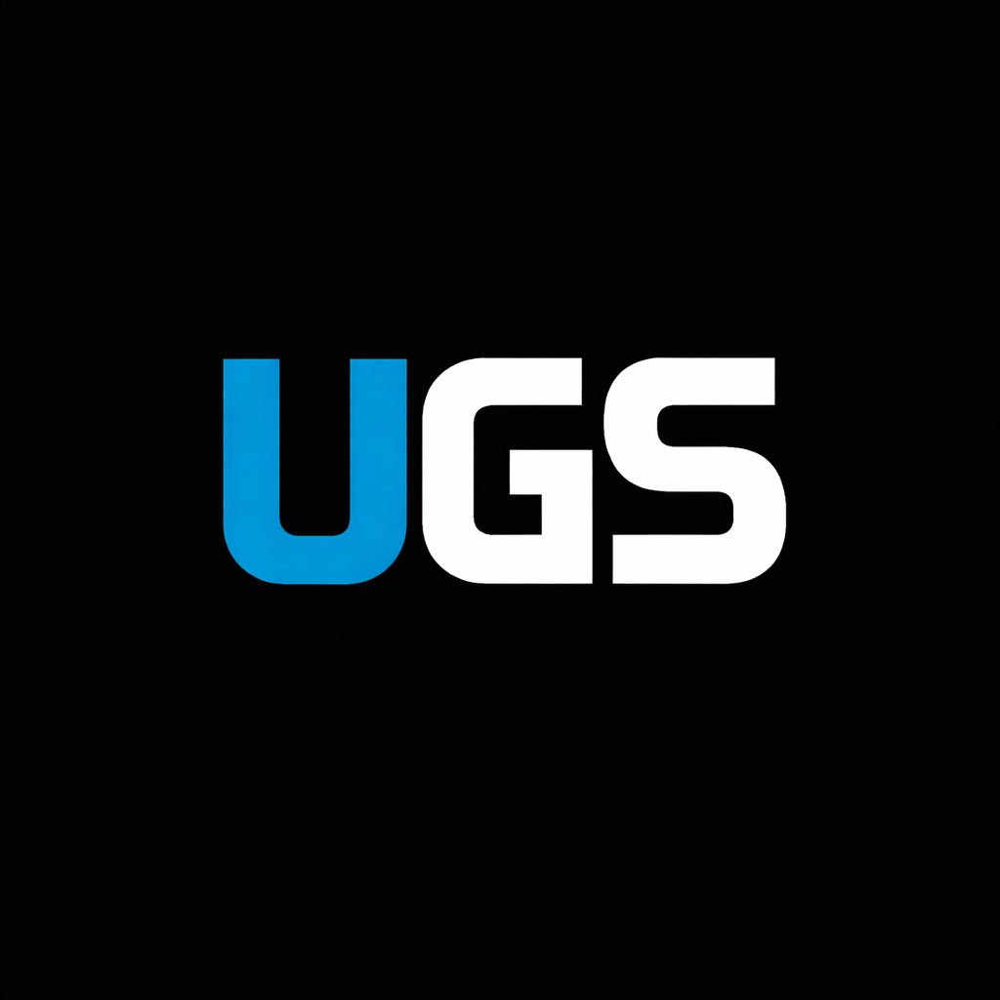

UGS DogeUB
The actual DogeUB app is bundled inside this repo. It runs as a local Node app on your machine, then opens in the browser from http://127.0.0.1:2345.
How To Use It
Run run-dogeub.bat from the repo root. The first launch installs dependencies and builds DogeUB. After that, it starts the proxy app and serves the real DogeUB interface locally.
Bundled Source
The full DogeUB app lives in the dogeub/ folder, including its React app, proxy server, and assets.
One-Click Launch
run-dogeub.bat installs, builds, and starts DogeUB if needed so you do not have to remember the commands.
UGS Entry Point
The landing page and quick menu now link here, so DogeUB is part of the hub instead of just a design reference.